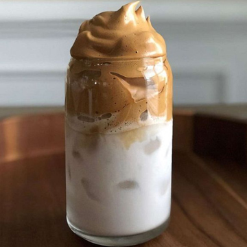

for 1 serving 2 tablespoons hot water 2 tablespoons sugar 2 tablespoons instant coffee powder milk, to serve ice, to serve
Add the hot water, sugar, and instant coffee to a bowl. Either hand whisk or use an electric mixer until the mixture is fluffy and light. To serve, spoon a dollop over a cup of milk with ice in it and stir. Enjoy!